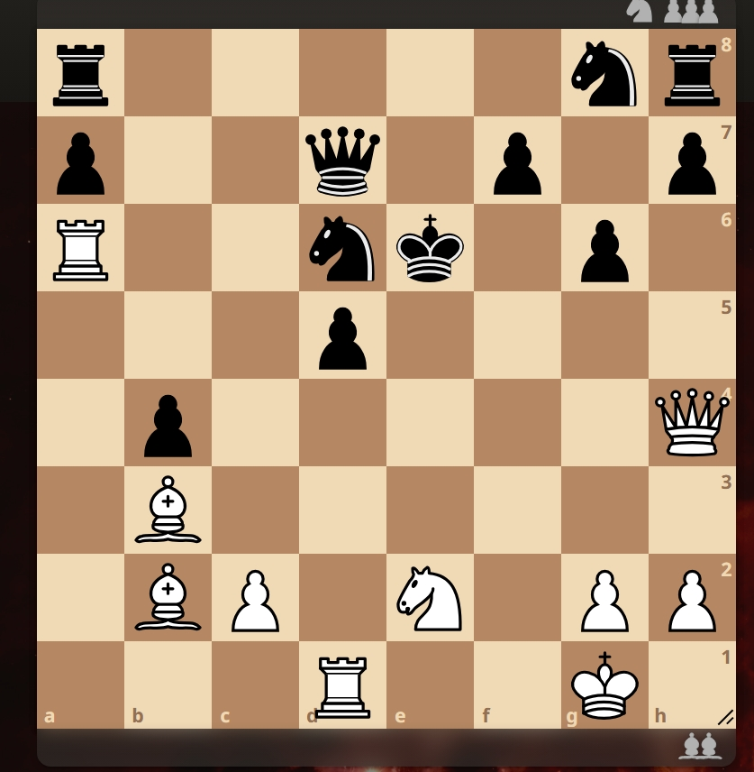
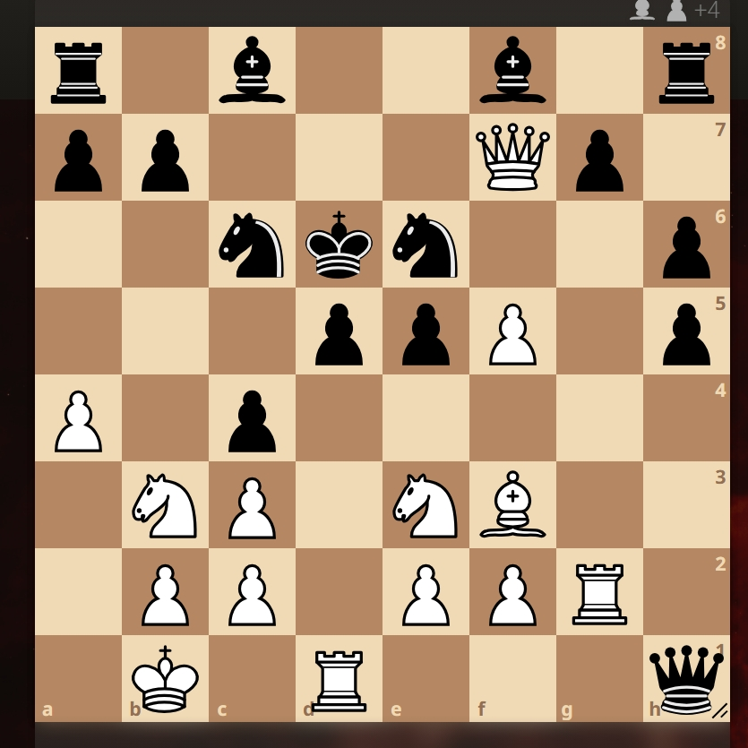

CS50 Final Project - Mina Magdy
Understanding the Chess ELO System:
Puzzle 1: White to Move
Puzzle 2: White to Move
Puzzle 3: White to Move
Puzzle 4: White to Move

Puzzle 5: White to Move

Name:
Estimated ELO:
White Opening:
Black Opening:
Strategic Score: / 10
Tactics Score: / 5
Recommendation: